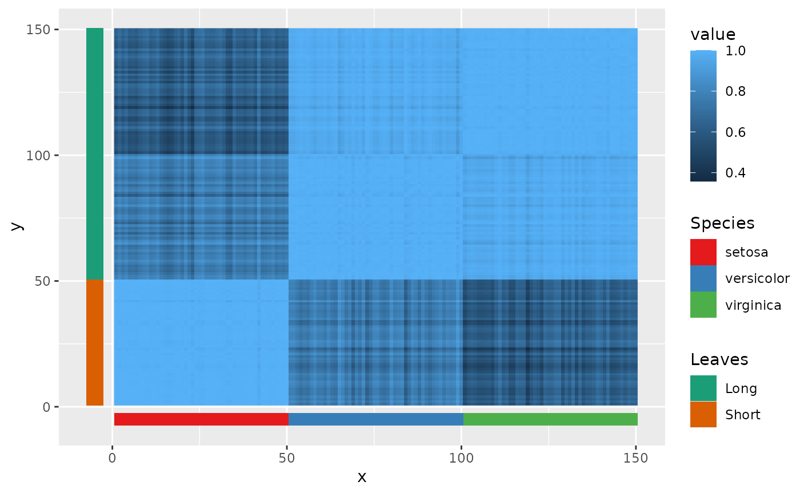

This function should only be called after all layers that the non-standard aesthetic scales affects have been added to the plot.
Inside a layer, the non-standard aesthetic should be part of the call to
aes mapping.
May return a warning that the plot is ignoring unknown aesthetics.
Arguments
- scalelist
A
listwherein elements are the results of calls to a scale function with a non-standard aesthetic set as theaestheticargument.- replaces
A
charactervector of the same length as- and parallel to-scalelist, indicating what standard aesthetic to replace with the non-standard aesthetic. Typically"colour"or"fill".
Details
Distributes a list of non-standard aesthetics scales to the plot, substituting geom and scale settings as necessary to display the non-standard aesthetics. Useful for mapping different geoms to different scales for example.
Examples
# Annotation of heatmap
iriscor <- cor(t(iris[, 1:4]))
df <- data.frame(
x = as.vector(row(iriscor)),
y = as.vector(col(iriscor)),
value = as.vector(iriscor)
)
annotation <- data.frame(
z = seq_len(nrow(iris)),
Species = iris$Species,
Leaves = ifelse(iris$Species == "setosa", "Short", "Long")
)
ggplot(df, aes(x, y)) +
geom_raster(aes(fill = value)) +
geom_tile(data = annotation,
aes(x = z, y = -5, spec = Species), height = 5) +
geom_tile(data = annotation,
aes(y = z, x = -5, leav = Leaves), width = 5) +
scale_listed(
list(scale_fill_brewer(palette = "Set1", aesthetics = "spec"),
scale_fill_brewer(palette = "Dark2", aesthetics = "leav")),
replaces = c("fill", "fill")
)
#> Warning: Ignoring unknown aesthetics: spec
#> Warning: Ignoring unknown aesthetics: leav
